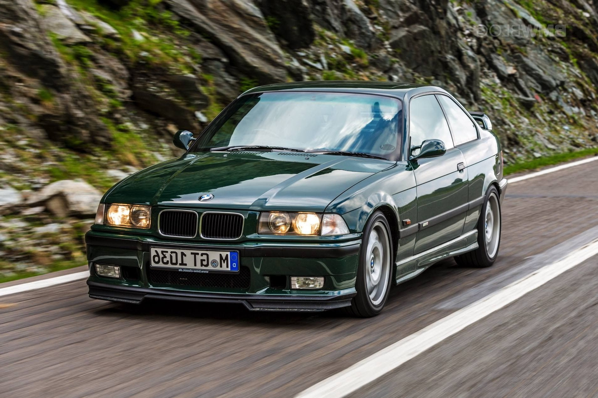

E36 M3 (1992–1999)

Silnik: 3.2 litrowa rzędowa szóstka o mocy 321 koni mechanicznych.
Osiągi: Przyśpieszenie od 0 do 100 km/h wynosi 6.2s. Prędkość maksymalna organiczona elektronicznie to 250 km/h. Średnie spalanie wynosi 11l/100km
Wygląd zewnętrzny: Dostępne były 3 wesje: Dwudrzwiowe coupe o masie własnej 1515kg, czterodrzwiowy sedan ważący 1535kg oraz wersja cabriolet ważąca 1635kg.
Napęd: 6 biegowa skrzynia manualna z silnikiem ulokowanym z przodu i napędęm na tylną oś.
E39 M5 (1998–2003)
Silnik: 4.9 litrowy ośmiocylindrowy silnik z cylindrami umieszczonymi rzędowo o mocy 400 koni mechanicznych.
Osiągi: Przyśpieszenie od 0 do 100 km/h wynosi 5.3s. Prędkość maksymalna organiczona elektronicznie to 250 km/h, bez ogranicznika prędkości wynosi ona 270 km/h. Średnie spalanie wynosi 13.9l/100km
Wygląd zewnętrzny: Czterodrzwiowy sedan o masie własnej 1795kg i długości 4,78m
Napęd: 6 biegowa skrzynia manualna z silnikiem ulokowanym wzdłużnie do osi pojazdu i napędęm na tylną oś.
E46 M3 (2000–2006)

Silnik: 3.2 litrowa rzędowa szóstka o mocy 343 koni mechanicznych.
Osiągi: Przyśpieszenie od 0 do 100 km/h wynosi 5.2s. Prędkość maksymalna organiczona elektronicznie to 250 km/h, bez ogranicznika prędkości wynosi ona około 275 km/h. Średnie spalanie wynosi 11.9l/100km
Wygląd zewnętrzny: Występowały dwie wesje nadwozia: Dwudrzwiowe coupe o masie własnej 1570kg i długości 4,49m oraz kabriolet o masie własnej 1730kg.
Napęd: 6 biegowa skrzynia manualna z silnikiem ulokowanym wzdłużnie do osi pojazdu i napędęm na tylną oś.
E60/E61 M5 (2004–2010)

Silnik: 5 litrowy dziesięciocylindrowy silnik z cylindrami umieszczonymi rzędowo mocy 507 koni mechanicznych.
Osiągi: Przyśpieszenie od 0 do 100 km/h wynosi 4.8s dla wersji kombi, 4,7s dla wersji sedan. Prędkość maksymalna organiczona elektronicznie to 250 km/h. Średnie spalanie wynosi około 14.9l/100km dla obu wersji.
Wygląd zewnętrzny: Występowały dwie wesje nadwozia: Czterodrzwiowy sedan (E60) o masie własnej 1820kg oraz wersja kombi (E61) o masie własnej 1880kg.
Napęd: 7 biegowa zautomatyzowana manualna skrzynia biegów (AMT) z silnikiem ulokowanym wzdłużnie do osi pojazdu i napędęm na tylną oś.
E90/E92/E93 M3 (2007–2013)
Silnik: 4 litrowy silnik benzynowy z ośmioma cylindrami umieszczonymi rzędowo o mocy 420 koni
mechanicznych.
Osiągi: Przyśpieszenie od 0 do 100 km/h wynosi 4.8s. Prędkość maksymalna organiczona elektronicznie to 250 km/h. Średnie spalanie wynosi 12,4l/100km.
wynosi 8.3l/100km
Wygląd zewnętrzny: Występowały trzy wersje nadwozia: coupe, sedan oraz kabriolet, Długość pojazdu wynosi 4,615m dla coupe i sedana, 4,58 dla kabrioleta. Masa własna dla coupe: 1655kg, dla sedana: 1680kg, dla kabrioleta: 1885kg.
nadwozia typu kabriolet.
Napęd: 6 biegowa skrzynia manualna lub skrzynia dwusprzęgłowa DSG z silnikiem ulokowanym z przodu i napędęm na tylną oś.
1M E82 (2011 - 2012)
Silnik: Rzędowa szóstka o pojemności 3.0 litra generująca moc 340 koni mechanicznych.
Osiągi: Przyśpieszenie od 0 do 100 km/h wynosi 4.9s. Prędkość maksymalna elektronicznie ograniczona to 250 km/h.
km/h, bez ograniczenia wynosi ona 268 km/h. Średnie spalanie wynosi 9.6l/100km
Wygląd zewnętrzny: Dwudrzwiowe coupe ważące 1570kg, Długość pojazdu wynosi 4,38m.
Napęd: 6 biegowa skrzynia manualna z silnikiem ulokowanym z przodu i napędęm na tylną oś.